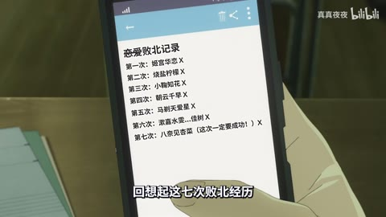

AI01 / 148—152秒
〖4K〗如果聊天窗口就是她的整个世界 —— world.execute(me)
所查四秒至少4次主要构图连接；红黑配色、边框维持视觉联系，倾斜字带属于局部层。
迁移提问：此刻观众必须读懂哪一条信息？如果所有界面都在动，谁仍然是主角？
手法专题 / 规则、用途与取舍
通过变化与稳定的比例让信息有轻重。视觉密度来自切镜、版式与局部动画三个层面，不只靠刀数。
所有形式；尤其高潮前的蓄力、解释段的阅读、回忆段的停留和快慢对照。
全片等密度；把闪帧当新镜；高切速被当成质量分；没有稳定段供观众理解。
①为每段写信息任务；②标主镜/局部更新/特效事件；③给关键内容停留；④高潮前留对比；⑤静音检查视觉，再另核声音。
时序执行易；阅读负担和情绪组织需判断，音画对拍本研究未核验。
基础机制已做13项原创演示，不等于本页所有复杂组合均已成片验证。
原机制演示 →AI01 / 148—152秒
所查四秒至少4次主要构图连接；红黑配色、边框维持视觉联系，倾斜字带属于局部层。
迁移提问：此刻观众必须读懂哪一条信息？如果所有界面都在动，谁仍然是主角？
H19 / 42—54秒
42秒人物周围重复文字，48秒圆头像配模糊数据，54秒选项强调。
迁移提问：此刻观众必须读懂哪一条信息？如果所有界面都在动，谁仍然是主角？
H33 / 34—50秒
彩色漫画街景做横向空间移动，蓝色片名层保持；人物剪影逐渐变为密集竖块与网点，再恢复人形。
迁移提问：前景、中景、背景分别是什么？如果镜头移动，原图未画出的部分由谁补齐？

AI42 / 58—80秒
对话室有红色方块浮动，插入带角、眼、牙的巨大庙宇，后回群像。
迁移提问：观众能指出谁在攻击、朝哪边、是否击中吗？哪些是原素材的动作，哪些才是新增剪接或合成？

同六镜排“稳—密—停”和“全程密”两版，记录观众能回忆的主体数量。
交付时保留基础版与加效果版，并写“增加了什么意义、损失了什么清晰度”。
使用观察与复盘表 →